About SEVENTEENFOLD
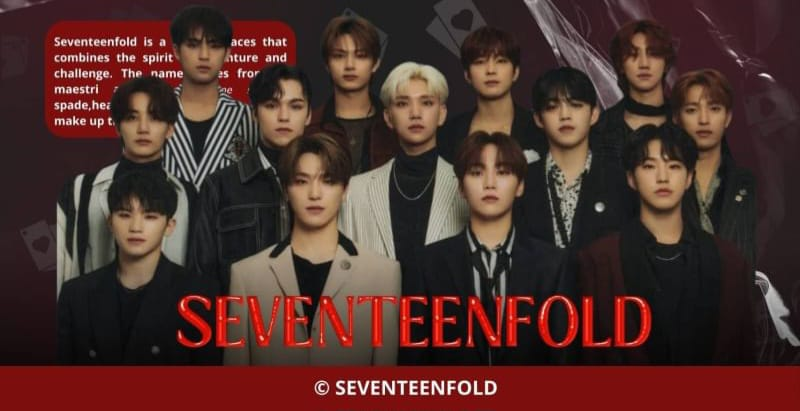
𓂃✦⁶˖՞៸៸ 𝖂𝖊𝖑𝖈𝖔𝖒𝖊 𝖙𝖔 𝕾𝖊𝖛𝖊𝖓𝖙𝖊𝖊𝖓𝖋𝖔𝖑𝖉 𝖂𝖔𝖗𝖑𝖉! ៸៸𓂃₊˚✧ ㅤㅤㅤ𝕾𝖊𝖛𝖊𝖓𝖙𝖊𝖊𝖓𝖋𝖔𝖑𝖉 is a 𝘶𝘯𝘪𝘲𝘶𝘦 𝘱𝘭𝘢𝘤𝘦 that combines the spirit of 𝐚𝐝𝐯𝐞𝐧𝐭𝐮𝐫𝐞 and 𝐜𝐡𝐚𝐥𝐥𝐞𝐧𝐠𝐞. The name comes from 13 𝗺𝗮𝗲𝘀𝘁𝗿𝗼𝘀 and the 4 𝘨𝘢𝘮𝘦 𝘴𝘺𝘮𝘣𝘰𝘭𝘴 𓂃ㅤ𝖘𝖕𝖆𝖉𝖊,ㅤ𝖍𝖊𝖆𝖗𝖙, 𝖉𝖎𝖆𝖒𝖔𝖓𝖉 and 𝖈𝖑𝖚𝖇 — whichㅤㅤ make up theㅤnumber 17. In this dorm, every member is aㅤ"𝗚𝗮𝗺𝗲 𝗠𝗮𝗲𝘀𝘁𝗿𝗼" who masters the symbols from theㅤ l̲o̲w̲e̲s̲t̲ to the h̲i̲g̲h̲e̲s̲t̲. ㅤㅤㅤThoseㅤtrappedㅤinㅤthisㅤ p̲a̲r̲a̲l̲l̲e̲l̲ w̲o̲r̲l̲d̲ㅤmust 𝘤𝘰𝘮𝘱𝘭𝘦𝘵𝘦 a 𝘴𝘦𝘳𝘪𝘦𝘴 𝘰𝘧 𝘤𝘩𝘢𝘭𝘭𝘦𝘯𝘨𝘪𝘯𝘨 𝘨𝘢𝘮𝘦𝘴 𝘵𝘰 𝘳𝘦𝘵𝘶𝘳𝘯ㅤ𝘵𝘰 𝘵𝘩𝘦 𝘳𝘦𝘢𝘭 𝘸𝘰𝘳𝘭𝘥. Each symbol a 𝗚𝗮𝗺𝗲 𝗠𝗮𝗲𝘀𝘁𝗿𝗼ㅤ holds is not just a sign of power,ㅤbut also aㅤ k̳e̳y̳ ̳t̳o̳ ̳f̳i̳n̳i̳s̳h̳i̳n̳g̳ ̳t̳h̳e̳i̳r̳ ̳m̳i̳s̳s̳i̳o̳n̳s̳. The difficulty ofㅤthe games varies ㅤwith the valueㅤofㅤtheㅤsymbols:ㅤT̲h̲e̲ ̲h̲i̲g̲h̲e̲s̲t̲ ̲o̲f̲ㅤㅤt̲h̲e̲ ̲v̲a̲l̲u̲e̲,̲ t̲h̲e̲ ̲h̲a̲r̲d̲e̲r̲ ̲t̲h̲e̲ ̲g̲a̲m̲e̲ ̲i̲s̲.̲ ㅤㅤㅤAt 𝕾𝖊𝖛𝖊𝖓𝖙𝖊𝖊𝖓𝖋𝖔𝖑𝖉 𝘤𝘰𝘶𝘳𝘢𝘨𝘦, ㅤ𝘪𝘯𝘵𝘦𝘭𝘭𝘪𝘨𝘦𝘯𝘤𝘦 ㅤㅤ and 𝘵𝘦𝘢𝘮𝘸𝘰𝘳𝘬 areㅤㅤ𝐭𝐡𝐞ㅤ𝐤𝐞𝐲𝐬 𝐭𝐨 𝐰𝐢𝐧𝐧𝐢𝐧𝐠ㅤㅤ𝐞𝐚𝐜𝐡 𝐠𝐚𝐦𝐞 𝐚𝐧𝐝 𝐜𝐨𝐥𝐥𝐞𝐜𝐭𝐢𝐧𝐠 𝐭𝐡𝐞 𝐧𝐞𝐞𝐝𝐞𝐝ㅤ 𝐬𝐲𝐦𝐛𝐨𝐥𝐬.ㅤEveryㅤdayㅤisㅤa new 𝐚𝐝𝐯𝐞𝐧𝐭𝐮𝐫𝐞,ㅤand everyㅤgameㅤis an exciting 𝐜𝐡𝐚𝐥𝐥𝐞𝐧𝐠𝐞.
Member of SEVENTEENFOLD
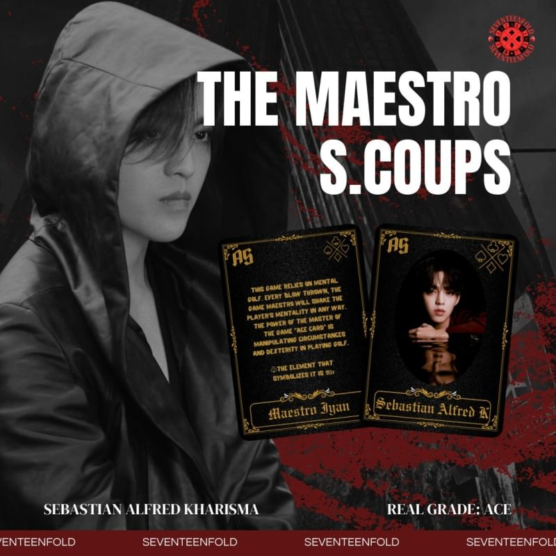
𒁍 This game relies on mental golf. Every blow ㅤㅤ thrown, the game master will ㅤ shake the ㅤㅤ player's mentality inㅤ any way. The power ㅤㅤ of the maestro of the gameㅤ "Ace Card"ㅤ is ㅤㅤ manipulating circumstances and ㅤdexterity ㅤㅤ in playing golf. 🂱ㅤthe element that symbolizes it is 𝕬𝖎𝖗.
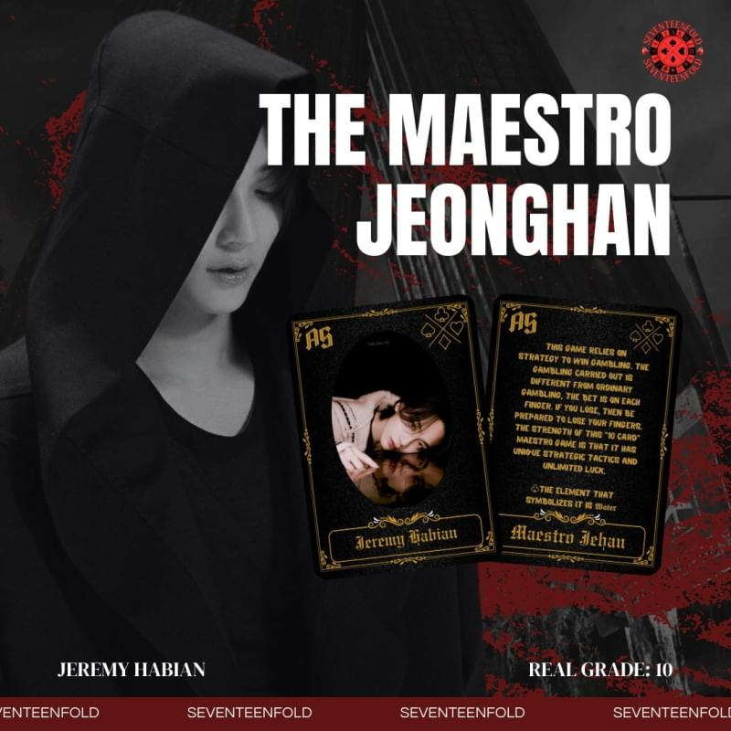
𒁍This game relies on strategy to win gambling. ㅤㅤThe ㅤ gambling ㅤcarriedㅤ out is ㅤdifferent ㅤㅤfromㅤ ordinaryㅤ gambling,ㅤㅤ the bet is on ㅤㅤeach finger. If you ㅤlose, then ㅤbe prepared ㅤㅤto lose your fingers. ㅤThe ㅤstrength of this ㅤㅤ"10 Card" maestro game is that it has unique ㅤㅤstrategicㅤ ㅤ tacticsㅤ and ㅤunlimited ㅤluck. 🂱 the element that symbolizes it is 𝖂𝖆𝖙𝖊𝖗.
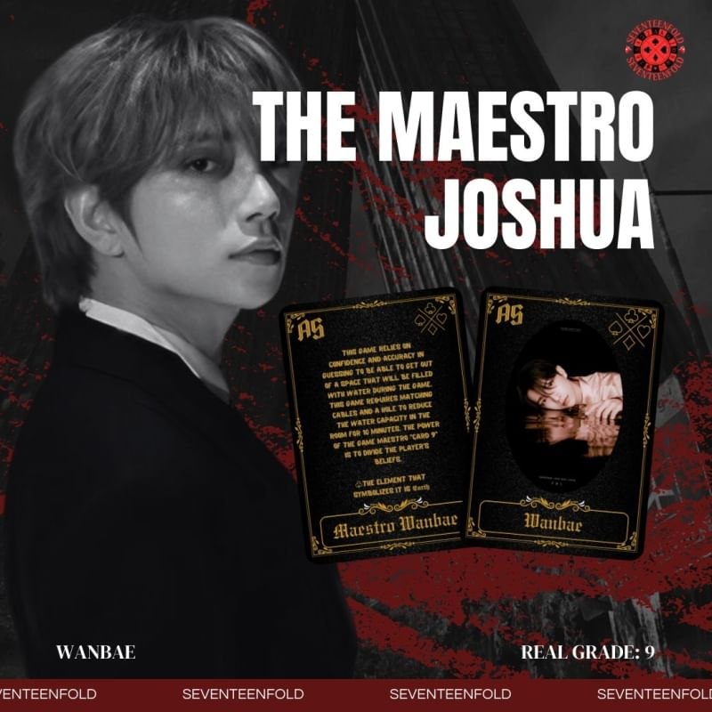
𒁍This game relies on confidence and accuracy in ㅤㅤguessing to be ㅤ able to ㅤget out of aㅤ space ㅤㅤthat will be filled with water during the game. ㅤㅤThis gameㅤ requires ㅤmatching ㅤcables and a ㅤㅤhole to reduce the ㅤ waterㅤ capacity ㅤㅤin the ㅤㅤroom for 10 minutes. The power ㅤㅤof the game ㅤㅤmaestro "Card 9" is to divide the player's beliefs. 🂱ㅤthe element that symbolizes it is 𝕰𝖆𝖗𝖙𝖍.
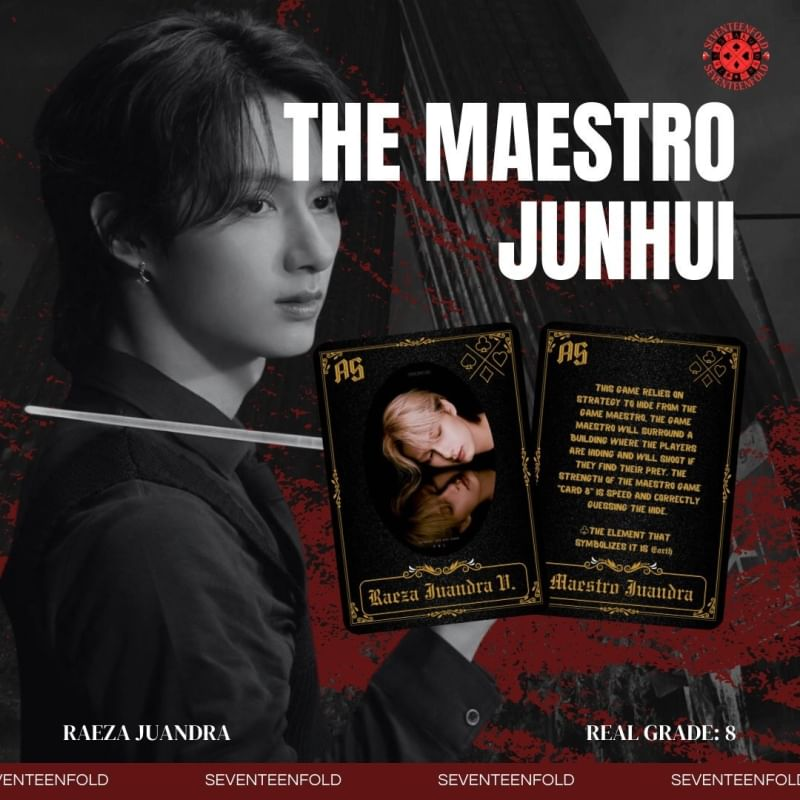
𒁍This game ㅤrelies onㅤ strategy to ㅤhide from ㅤㅤthe game maestro. ㅤㅤThe game master ㅤ will ㅤㅤsurround a building ㅤwhere the ㅤplayers are ㅤㅤhiding and willㅤ shootㅤ if they find their prey. ㅤㅤThe strength of the ㅤmaestro gameㅤ "Card 8" ㅤㅤis speed and ㅤcorrectly ㅤguessingㅤ the hide. 🂱ㅤthe element that symbolizes it is 𝕰𝖆𝖗𝖙𝖍.
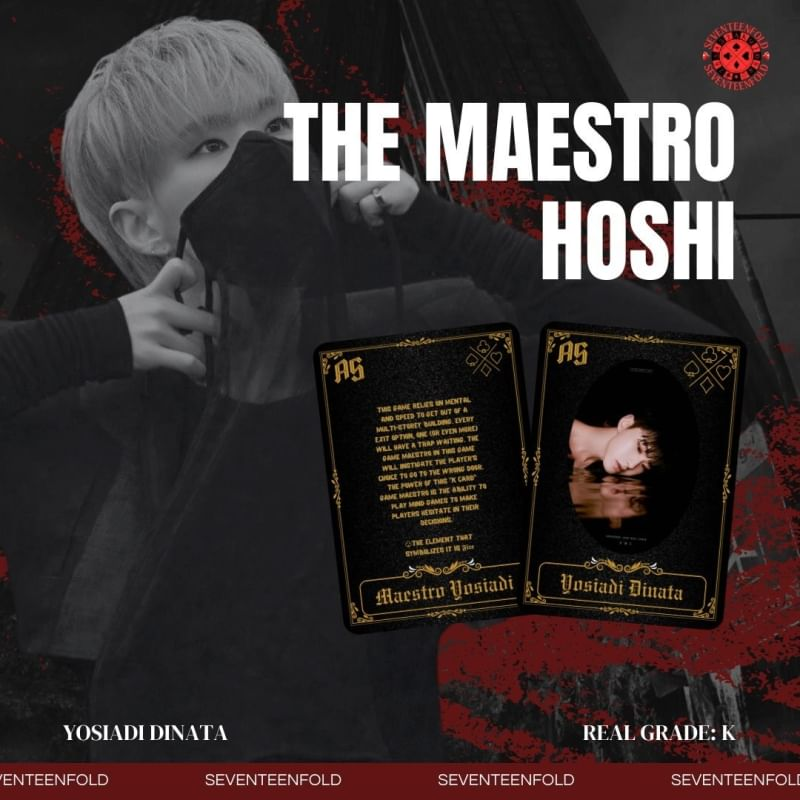
𒁍 This game reliesㅤㅤon ㅤmental ㅤand speed ㅤㅤ to ㅤget ㅤout ㅤof aㅤ multi-storey ㅤbuilding. ㅤㅤ Every exit option, ㅤoneㅤ (or even more) will ㅤㅤ have a trap waiting. ㅤThe game maestroㅤ in ㅤㅤ this game will instigate ㅤthe player's choice ㅤㅤ to go to the wrongㅤ door. ㅤThe power of this ㅤㅤ "K Card"ㅤ game maestro isㅤ the ㅤability to ㅤㅤ playㅤㅤ mindㅤ games ㅤto ㅤmake ㅤplayers ㅤㅤ hesitateㅤㅤㅤㅤ in ㅤㅤtheir ㅤㅤㅤㅤ decisions. 🂱ㅤthe element that symbolizes it is 𝕱𝖎𝖗𝖊.
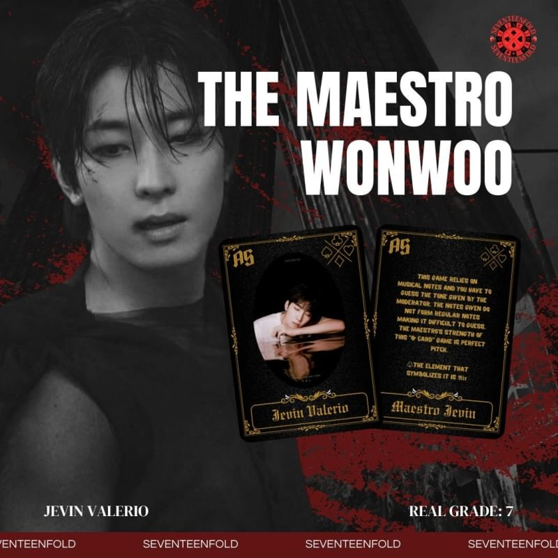
𒁍This game relies on physics ㅤ andㅤ strategy ㅤㅤto get out ㅤof ㅤa ㅤburning ㅤ mansion in 10 ㅤㅤminutes. The ㅤgame maestro's ㅤㅤ strength ㅤㅤ"Card 7" is knowing the ㅤshortcut to exit and ㅤㅤcreating a dead ㅤend to ㅤexit ㅤthe mansion. 🂱ㅤthe element that symbolizes it is 𝕱𝖎𝖗𝖊.

𒁍This game reliesㅤ on ㅤmusical ㅤnotes and ㅤㅤyou have to guess theㅤ tone ㅤㅤgivenㅤ by ㅤㅤthe moderator. The notes given do not form ㅤㅤregular notes making itㅤ difficult ㅤto guess. ㅤㅤThe ㅤmaestro's ㅤstrength ㅤㅤㅤof ㅤㅤㅤthis ㅤㅤ"Q Card" ㅤㅤgame ㅤis ㅤㅤㅤperfectㅤㅤ pitch. 🂱ㅤthe element that symbolizes it is 𝕬𝖎𝖗.
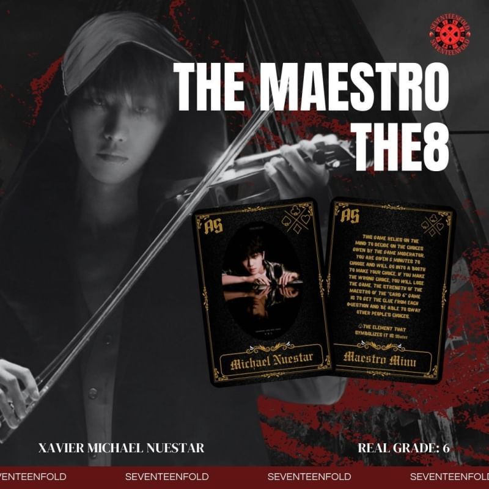
𒁍This game relies ㅤon ㅤthe mind to ㅤ decide ㅤㅤon the choices given by the game moderator. ㅤㅤYou are given 5 ㅤminutes to ㅤchooseㅤ and ㅤㅤwill go into a booth to ㅤmakeㅤ your ㅤchoice. ㅤㅤIf you make the ㅤwrong ㅤchoice,ㅤ youㅤ will ㅤㅤloseㅤ the ㅤgame.ㅤㅤ The ㅤstrength ㅤㅤㅤof ㅤㅤthe maestro ofㅤ the ㅤㅤ"Card 6" ㅤgame is to ㅤㅤget the clueㅤ from ㅤㅤeach question ㅤㅤ and ㅤㅤbe able to ㅤsway ㅤotherㅤ people'sㅤ choices. 🂱ㅤthe element that symbolizes it is 𝖂𝖆𝖙𝖊𝖗.
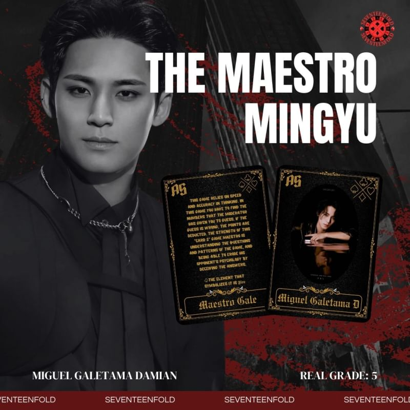
𒁍This gameㅤ relies on speedㅤ andㅤaccuracy ㅤㅤin thinking. In this gameㅤyouㅤhaveㅤtoㅤfind ㅤㅤthe numbers that theㅤmoderator ㅤhas given ㅤㅤyou to guess. If ㅤthe ㅤguessㅤis wrong,ㅤ the ㅤㅤpoints areㅤ deducted. The ㅤstrength ㅤof this ㅤㅤ"Card 5" game maestro isㅤ understanding the ㅤㅤquestionsㅤ and ㅤ patterns ㅤof ㅤthe ㅤgame, ㅤㅤand being ableㅤ to ㅤerodeㅤ his ㅤopponent's ㅤㅤpsychology ㅤbyㅤㅤ deceivingㅤ the ㅤanswers. 🂱ㅤthe element that symbolizes it is 𝕱𝖎𝖗𝖊.
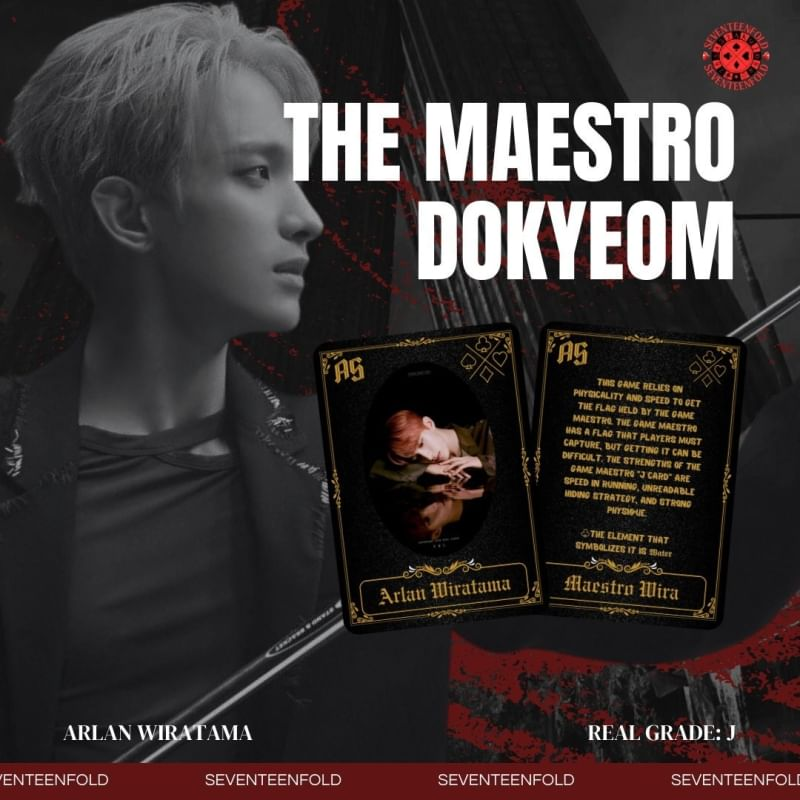
𒁍This game relies on physicality and speed to get ㅤㅤtheㅤ flag ㅤheldㅤㅤ by ㅤthe ㅤㅤgame maestro. ㅤㅤThe game maestro has a flag that players ㅤmust ㅤㅤcapture, but getting it can ㅤbe ㅤdifficult. The ㅤㅤstrengths of the ㅤgame maestroㅤ "J Card"ㅤ are ㅤㅤspeed ㅤㅤinㅤ running,ㅤ unreadableㅤ ㅤhiding ㅤㅤstrategy, ㅤㅤ andㅤㅤ s t r o n gㅤㅤ ㅤ physique. 🂱ㅤthe element that symbolizes it is 𝖂𝖆𝖙𝖊𝖗.
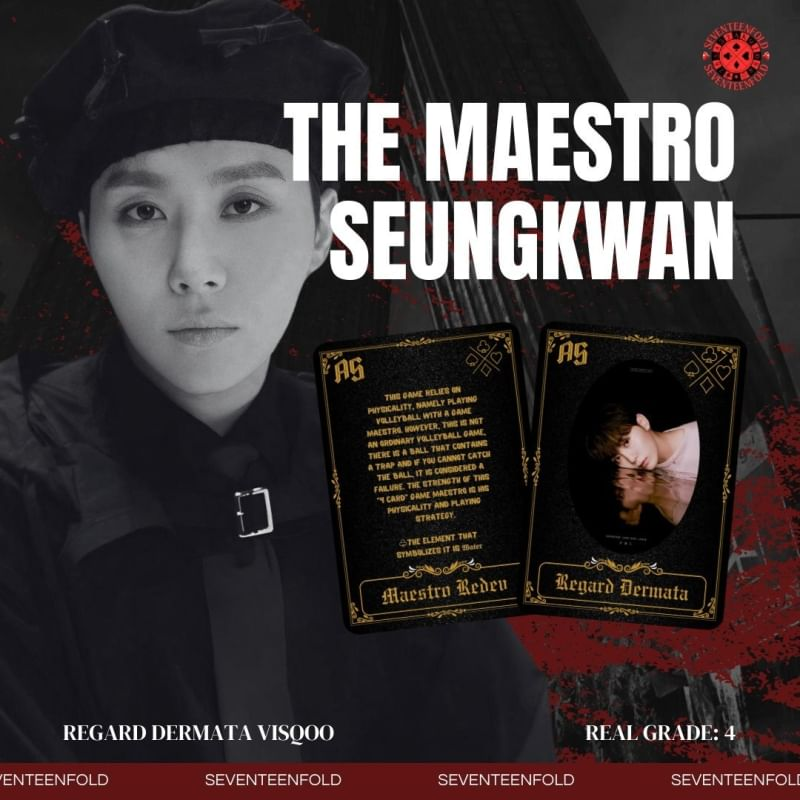
𒁍This game relies on physicality, namely playing ㅤㅤvolleyball with aㅤㅤ game maestro.ㅤ However, ㅤㅤthis is notㅤan ㅤㅤordinaryㅤㅤ volleyball game, ㅤㅤthere is aㅤ ballㅤ thatㅤcontainsㅤa trapㅤand if ㅤㅤyou cannotㅤ catchㅤ the ball, it is ㅤconsidered ㅤㅤa failure. ㅤㅤTheㅤ strengthㅤ ofㅤ this ㅤ"4 Card" ㅤㅤgameㅤ maestro ㅤis ㅤㅤhis ㅤㅤp h y s i c a l i t y ㅤㅤandㅤㅤㅤㅤㅤㅤㅤㅤ playing ㅤㅤㅤㅤㅤㅤ strategy. 🂱ㅤthe element that symbolizes it is 𝖂𝖆𝖙𝖊𝖗.
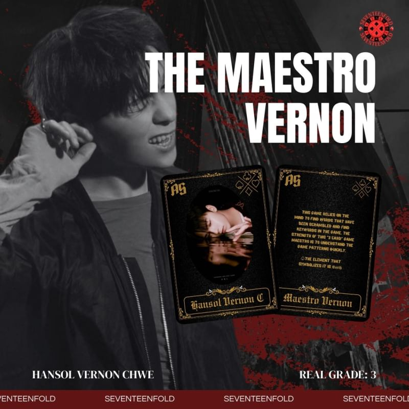
𒁍This game ㅤreliesㅤ on ㅤthe ㅤmindㅤ to ㅤfind ㅤㅤwords that have been ㅤscrambled ㅤandㅤ find ㅤㅤkeywords in ㅤtheㅤ game. The ㅤstrengthㅤ of ㅤㅤthis "3 Card" game maestroㅤ is to ㅤunderstand ㅤㅤthe ㅤㅤㅤㅤgameㅤㅤㅤㅤ patterns ㅤㅤㅤquickly. 🂱ㅤthe element that symbolizes it is 𝕰𝖆𝖗𝖙𝖍.
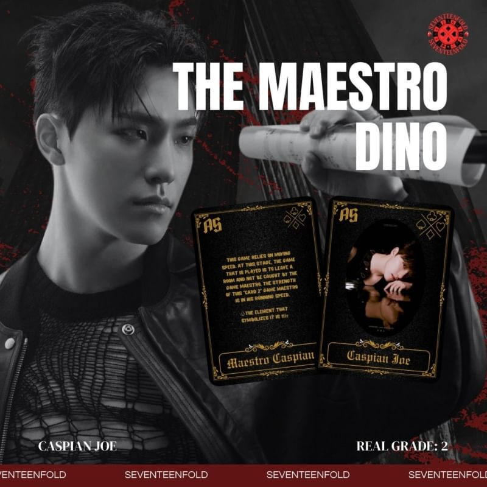
𒁍Thisㅤ gameㅤ relies ㅤon ㅤmoving ㅤ ㅤspeed. ㅤㅤAt this stage, the game thatㅤ isㅤ played ㅤ is ㅤㅤto ㅤleave ㅤa room and not be caught by the ㅤㅤgame maestro. The strength of this ㅤ "Card 2" ㅤㅤgame maestroㅤ isㅤ inㅤ his ㅤrunning ㅤspeed. 🂱ㅤthe element that symbolizes it is 𝕬𝖎𝖗.